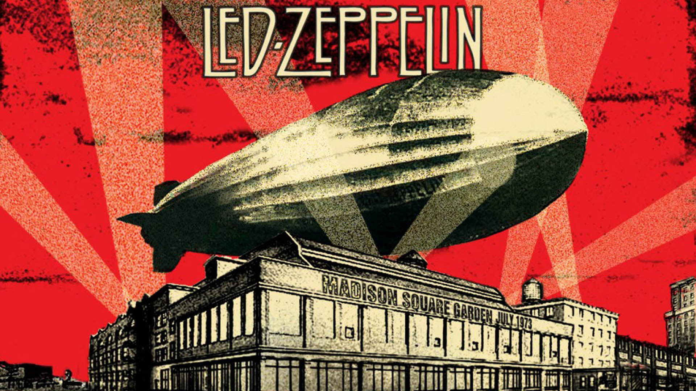
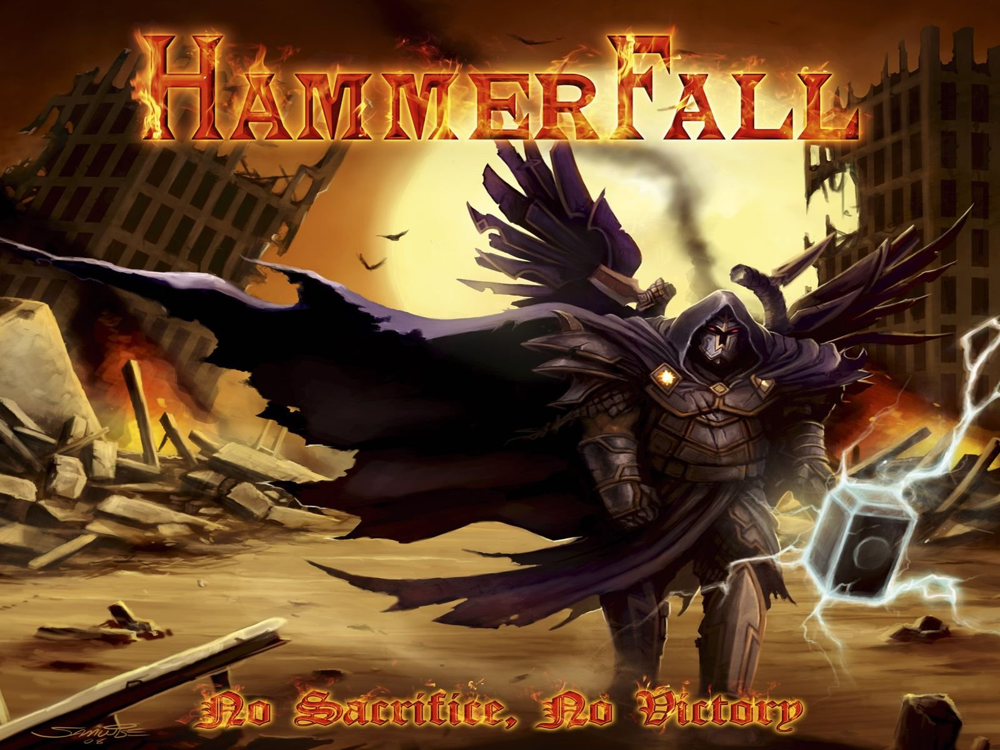
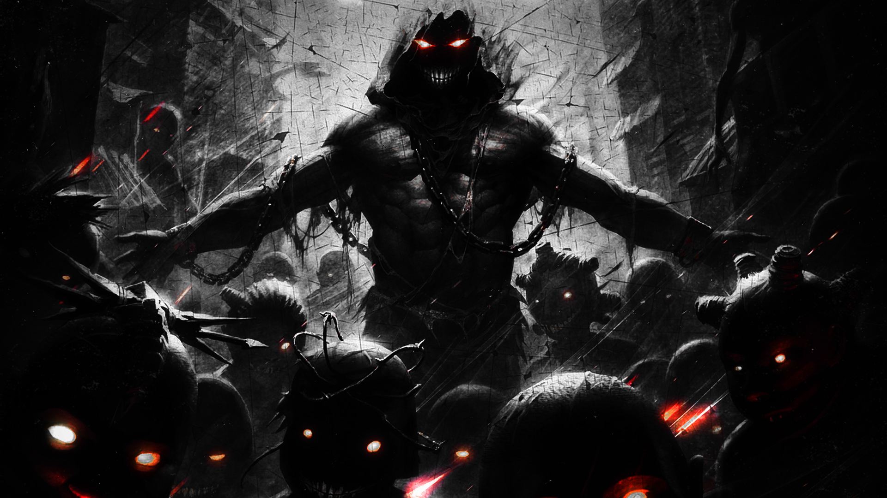

Blogs, mācību procesa rezultātā.

Rokmūzika (angļu: rock music) ir daudzos novirzienos sazarojies mūsdienu mūzikas žanrs. Skaņdarbi ir vokāli instrumentāli un instrumentāli, raksturīgs akcentēts ritms, dinamiskums. Pamatā izmantotas elektriskās ģitāras (basģitāras, elektriskās ģitāras), sitaminstrumenti (bungas) un elektroniskie mūzikas instrumenti (sintezators).
.
Power metal (burtiski tulkojot - Spēka metāls) ir smagā metāla mūzikas žanrs, kas attīstījās no trešmetāla, speed metal, smagā pankroka un NWOBHM. Tas sāka veidoties 20.gs. 80.gadu vidū. Pirmā Power metal grupa bija Manowar ar savu albumu Power Metal Par komerciāli veiksmīgu šis žanrs kļuva 2000. gados ar tādām grupām kā DragonForce, Nightwish, Manowar un Theocracy priekšgalā. Šajā žanrā bieži vien dominē skaļas,izteiksmīgas un ātras/ļoti ātras ģitāru un bungu partijas, tenoru/kontr-tenoru balsis (Tenors). Ļoti bieži šim stilam neatņemama sastāvdaļa ir arī ļoti spoži,izteiksmīgi, ātri un ar vibrato pārpildīti ģitāru solo. Lēni tempi šajā stilā ir ļoti reti. Tāpat ievērojami retāk sastopami ir basu un baritonu vokāli, kā arī growling paņēmieni ar balsi. Liriskās tēmas šajā stila ietver: burvestības, tumšos spēkus, gaišos spēkus, cerību, cīņas, bruņniecību, drosmi, mīlestību, reliģiju(visāda veida), pūķus, eņģeļus utt.
.
Ņūmetāls (angļu: nu metal) ir smagā metāla apakšžanrs, kas radies sajaucoties smagajam metālam ar hiphopu, fankmūziku un grandžu. Jēdziens nu metal pirmo reizi tika lietots 1995. gadā, Spin Coal Chamber koncerta apskatā. Daudzas ņūmetāla grupas nāca no Kalifornijas (kā Korn, Deftones un P.O.D.).